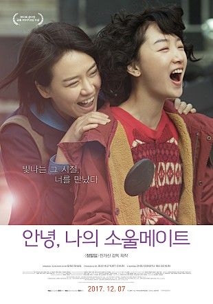

2016년 9월 4일에 중국에서 개봉한 영화. 원제는 "칠월과 안생"으로, 국내에는 2017년 12월 7일에 <안녕, 나의 소울메이트>라는 제목으로 개봉했다.
원작은 작가 칭산의 단편 「칠월과 안생」이다.
감독 : 증국상 (Tsang Kwok Cheung) (남성)
각본 : 람 윔 성 (Lam Wing Sum)
출연진
열셋, 운명처럼 우리의 우정은 시작되었다.
열일곱, 우리에게도 첫사랑이 생겼다.
스물, 어른이 된다는 건 이별을 배우는 것이었다.
스물셋, 널 나보다 사랑할 수 없음에 낙담했다.
스물일곱, 너를 그리워했다.
14년간 함께, 또 엇갈리며 닮아갔던
두 소녀의 애틋하고 찬란한 청춘 이야기!
안온한 삶을 떠올리게 하는 이름과 달리 오랜 시간 많은 곳을 떠돌며 살아왔다. 어머니와의 문제로 인해 독립을 꿈꿨고, 칠월 외에 의지하거나 마음을 나눌 만한 사람이 거의 없는 상태로 살아왔으므로 어떻게든 돈을 모아 자신의 공간을 마련하려 하면서도 새로운 집에 칠월의 자리를 마련해두려 했다. 배짱도 좋고 사람을 휘어잡는 힘이 있어 주변에는 늘 가까운 이가 있었지만, 가명과의 일로 인해 칠월을 떠난 후로는 늘 자유롭고자 했던 모습과 달리 어느 남자들을 따라 떠돌며 살았다.
칠월과 반평생을 서로에게 가장 소중한 존재로 지내왔다.
원만한 가족들 사이에서 외동으로 자라온 사람이자, 친구가 된 안생에게 마음 놓고 존재해도 되는 곳이 없다는 걸 알게 된 후로는 자신의 자리인 집을 자주 내어주곤 했던 이. "여자는 한 집에서 다른 집으로 갈 뿐"이라던 어머니의 폭력적인 교육에 완전히 동의하지는 않지만, 그에 대해 반기를 들지도 않는다. 공부도 잘해 비교적 수월하게 좋은 학교로 진학하며 '안정적이고 성공적인' 인생 코스를 밟는다. "정말 좋아하지 않으면 견디기 힘든" 남자도 하나 적당히 골라 이른 나이에 결혼을 하고 아이를 낳을 계획까지 차근차근 세웠으나, 그 안정적인 삶에 이변이 생긴다.
안생과 반평생을 서로에게 가장 소중한 존재로 지내왔다.
칠월의 남자친구.
칠월의 어머니로, 갈 곳이 마땅치 않은 안생을 다정하게 챙겨준다. 직접적으로 드러나진 않지만 칠월에게 억압적이고 여성혐오적인 여성상을 교육해온 듯하다.
이후 그간의 교육과 반하는 선택을 한 칠월을 존중해준다.